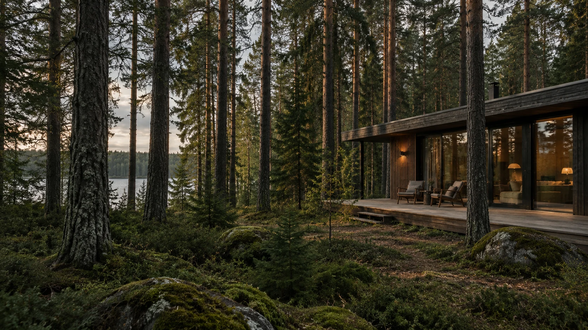
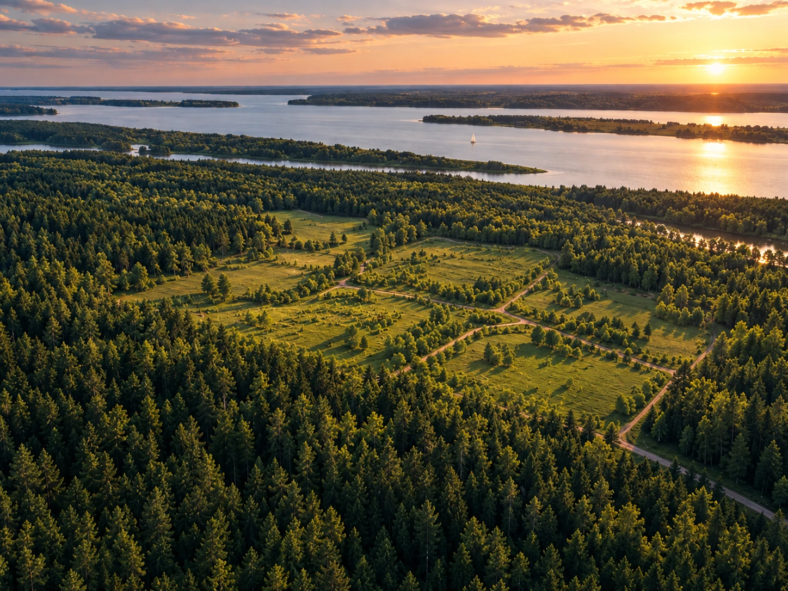
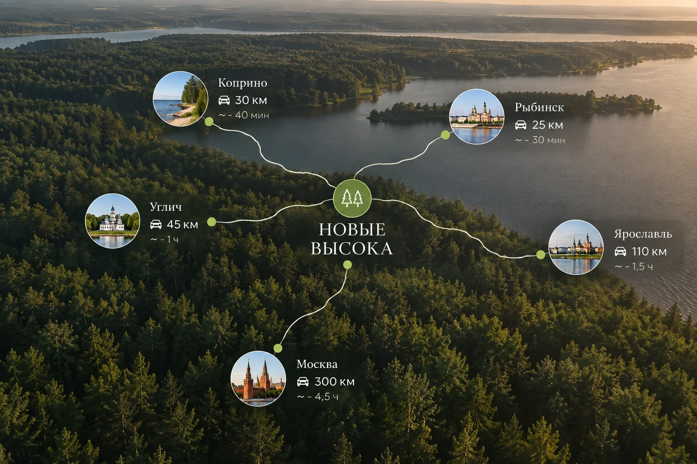
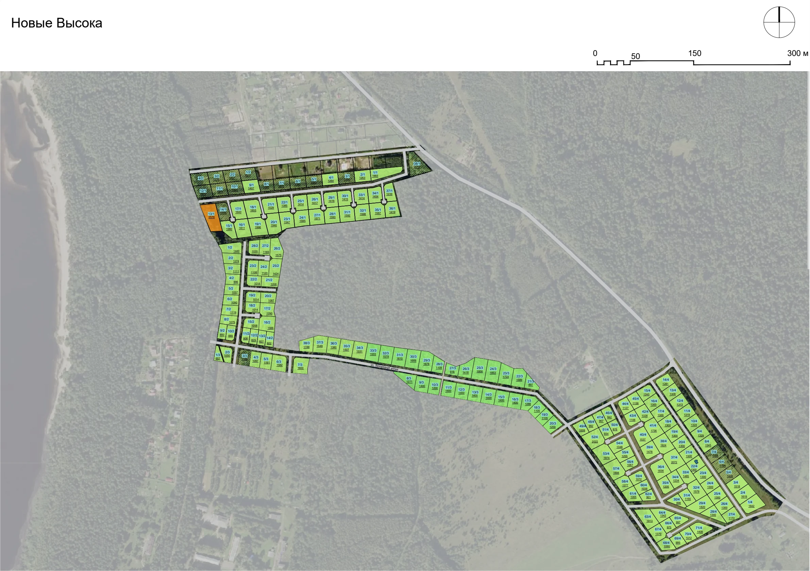
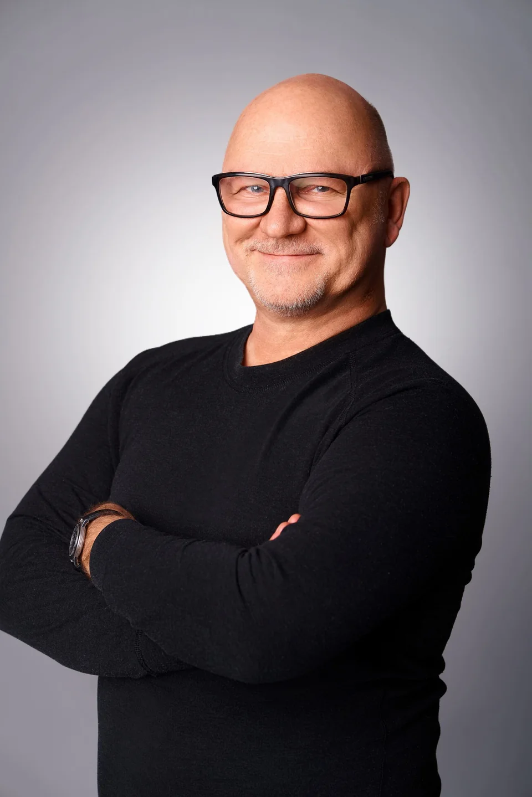
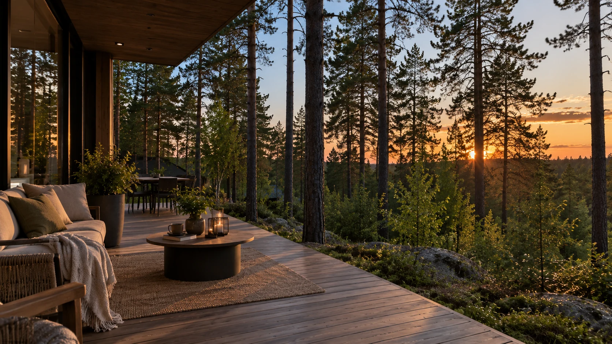

Единая территория рядом с лесом и водой

Ярославская область · Рыбинский район
Больше леса,
больше жизни
«Новые Высока» — место притяжения у леса и воды: участки ИЖС в Рыбинском районе Ярославской области.
Для строительства собственного жилого дома
Без посредников на стороне продавца
Пять кварталов для вашей
загородной жизни
Пять кварталов объединяют более 200 участков ИЖС на территории 275 га. Рядом — Высоковский бор и берег Волги. Продажа напрямую от собственника.
Пройти маршрут одного дня ↓
Дни, которые хочется
проводить за городом
Лес, Волга и дом за городом — несколько коротких историй о том, как здесь может проходить ваш день.
1 / 8
Листайте в сторону
Увидеть место, прежде чем приехать
Панорама с квадрокоптера и короткие видео с территории проекта.
Прогулка по территории вместе с основателем
Выберите ролик, чтобы увидеть место с разных точек.
Ближе к природе — из вашего города
Ярославская область, Рыбинский район. Ориентиры по расстоянию до проекта.

Москва≈ 300 км
Ярославль≈ 110 км
Рыбинск≈ 25 км
Углич≈ 45 км
Кварталы и всё, что находится рядом
Школа, магазины, остановка, лес и берег собраны ниже на одной интерактивной карте.
Открыть карту проекта ↓Выберите место
для своего дома
Пять кварталов расположены между лесом и Волгой. Выберите квартал на карте, чтобы посмотреть его особенности и доступные участки.

Покупка напрямую
у собственника
Участок продаёт собственник, а команда «Магазина Земли» сопровождает выбор и оформление. До сделки можно запросить выписку ЕГРН и проверить ограничения.
Подобрать участок
Без участия банков
Рассрочка от собственника
Первоначальный взнос — 30%. Остаток делится на 12 равных платежей.
30% взнос→12 месяцев→ЕГРН оформление
До полного расчёта участок находится в залоге у продавца. Условия фиксируются в договоре.
Выбираете участок
Приезжаете на просмотр или запрашиваете видео.
Согласовываем условия
Проверяем документы, стоимость и порядок оплаты.
Оформляем сделку
Подписываем договор и регистрируем право собственности.

Дмитрий Родионовоснователь «Магазина Земли»,
руководитель проекта «Новые Высока»
руководитель проекта «Новые Высока»
За проект отвечает команда «Магазина Земли»
Команда «Магазина Земли» больше десяти лет работает с земельными проектами в Ярославской области. Основатель компании Дмитрий Родионов сегодня руководит проектом «Новые Высока» и отвечает за его развитие.
В опыте команды — не только продажа участков, но и участие в развитии загородных территорий, в том числе проектов Коприно и «Ярославское Взморье». Этот опыт помогает смотреть на «Новые Высока» комплексно: от юридической подготовки земли и организации подъездов до будущей инфраструктуры, благоустройства и сценариев загородной жизни рядом с лесом и Волгой.
«С землёй связаны уверенность в будущем, возможность создавать своё пространство и передавать его следующим поколениям семьи».
10+лет работы с землёй
1 000+участков
400+клиентов
Пять причин обратиться в «Магазин Земли»
Что помогает принять решение спокойно и без лишних вопросов.
Вопросы
и ответы
Коротко о земле, дороге, коммуникациях и покупке.
Кто продаёт участки?
Участки продаёт собственник. «Магазин Земли» представляет проект и сопровождает покупателя.
Какой вид разрешённого использования у участков?
Индивидуальное жилищное строительство — ИЖС. Можно построить отдельно стоящий жилой дом с учётом правил застройки и ограничений участка.
К какой категории относятся земли?
Земли населённых пунктов. Перед покупкой сведения по выбранному участку проверяются по выписке ЕГРН.
Как устроен подъезд к участкам?
Для участков в Дегтярицах и Николо-Корме заявлен круглогодичный подъезд. Дорогу к конкретному участку лучше оценить во время просмотра.
Как подключить электричество?
Заявку подают в сетевую организацию. Стоимость, срок и перечень работ зависят от технических условий конкретного участка.
Какие ещё коммуникации доступны?
Воду, канализацию, газ и интернет проверяем отдельно для каждого участка. Условия подключения сообщит команда проекта.
Что входит в цену?
Перед выбором команда назовёт полную стоимость участка и отдельно перечислит дополнительные расходы, если они есть.
Как предоставляется рассрочка?
Рассрочку до 12 месяцев предоставляет собственник. Первоначальный взнос — 30%, остаток выплачивается по графику договора.
Есть ли обременение при рассрочке?
До полного расчёта участок находится в залоге у продавца. Запись об обременении отражается в ЕГРН.
Можно ли приехать и посмотреть участок?
Да. Запишитесь на экскурсию, чтобы посмотреть кварталы, подъезд и окружение выбранного участка.
Можно ли познакомиться с участком из другого города?
Да. Команда запишет видео подходящего участка и поможет сравнить варианты дистанционно.

Приезжайте выбрать своё место
Посмотрите участок и дорогу к нему. Если приехать пока не получается, получите видео.